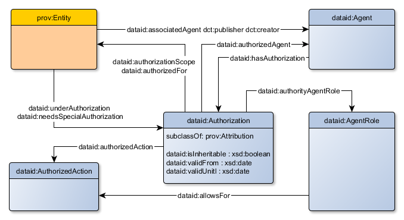
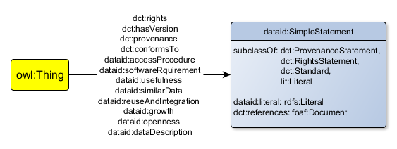
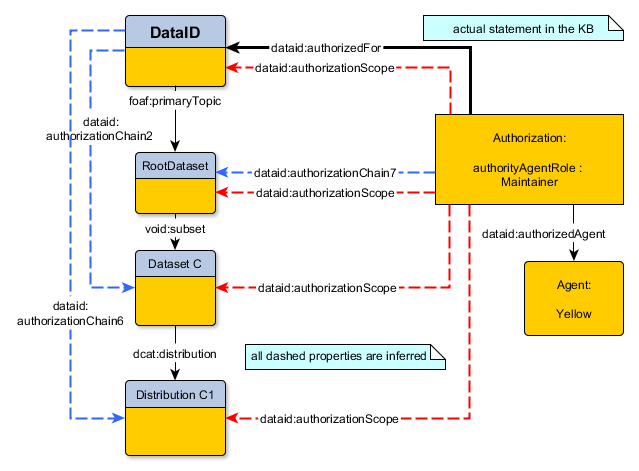

This section grants an overview of the DataID core Ontology, sectioned by concepts.
The depiction below shows most of the concepts and properties which make up DataID core.
A complete description of all concepts, properties and individuals is available in Section 6.
Throughout the DataID core Ontology, we opted to restrict ranges of multiple properties (such as dct:language or dct:temporal)
to concepts of vocabularies which have proven either to be sound and expressive enough or have been widely adopted in the Linked Data community. This step is necessary to provide a unified model of structured metadata without ambiguity.
If the need arises these restrictions shall either be extended to cover additional concepts or be abolished altogether. For example, we use the ODRL ontology ODRL
to describe licenses and other policies (dct:license). To specify dct:language we chose the very useful Lexvo ontology LEXVO and dataset.

Example Overview
For illustration purposes, we will weave a running example into the descriptions of concepts and properties.
This example is a reduced version of an original DataID document of the Arabic DBpedia (release: 2015-10) DBPEDIA.
Under the main dataset, only two sub-datasets remain (as opposed to over 50). We also left out some instances referenced in the example to reduce redundancy.
Also, we refrain listing the more common properties of DCTERMS DCTERMS and RDFS
such as dct:title, dct:description, dct:modified, dct:issued and rdfs:label to make this example more easy to read.
The example was chosen to cover many aspects of DataID core and to provide an easy use case which could arise in a similar fashion outside the DBpedia domain.
We added remarks next to some statements, explaining their use.
The full example is available in Turtle serialisation TURTLE here: 2015-10_dataid_ar.ttl.
The basic structure of its DataID document is outlined on the right, short names translate to the following URIs:
| DataId | <dataid_ar.ttl> |
| MainDataset | <dataid_ar.ttl?set=maindataset> |
| Dataset A | <dataid_ar.ttl?set=interlanguage_links> |
| Dataset C | <dataid_ar.ttl?set=long_abstracts_en_uris> |
| Distribution A1 | <dataid_ar.ttl?file=interlanguage_links_ar.ttl.bz2> |
| Distribution A2 | <dataid_ar.ttl?file=interlanguage_links_ar.tql.bz2> |
| Distribution C1 | <dataid_ar.ttl?file=long_abstracts_en_uris_ar.ttl.bz2> |
| Distribution C2 | <dataid_ar.ttl?file=long_abstracts_en_uris_ar.tql.bz2> |
| Distribution C3 | <dataid_ar.ttl?sparql=DBpediaSparqlEndpoint> |
The base URI used in our example is:
@base <http://downloads.dbpedia.org/2015-10/core-i18n/ar/2015-10_>
DataId
The class dataid:DataId subsumes
dcat:CatalogRecord, which describes a dataset entry in a dcat:Catalog. It does not represent a dataset,
but provenance information about dataset entries in a catalogue. This DataId resource is the root Entity in any DataID document.
Most general information about the DataID document and the relations with its context (e.g. to a Catalog, Repository etc.) are entered here.
We created the dataid:inCatalog property as the inverse of dcat:record to be able to reference the catalogue used.
As in the DCAT vocabulary DCAT we use foaf:primaryTopic to point out the Dataset
this DataId resource is about. This is a functional property.
To cover multiple datasets with one DataID document you have to make use of Sub-Dataset
(see void:subset and the next section).
The DataId instance below exemplifies a typical DataId entry in a dcat:Catalog.
<dataid_ar.ttl>
a dataid:DataId ;
dataid:latestVersion <dataid_ar.ttl> ; #We make use of the version pointers of DataID core. This is the latest version.
dataid:underAuthorization <dataid_ar.ttl?auth=maintainerAuthorization> , #the inverse property of dataid:authorizationScope helps to identify responsible Agents for an Entity
<dataid_ar.ttl?auth=creatorAuthorization> ;
dataid:inCatalog <dataid_catalog.ttl> #we want to point out the dcat:Catalog this DataID document is recorded in.
dct:title "DataID metadata for the Afrikaans DBpedia"@en ;
dct:publisher <http://wiki.dbpedia.org/dbpedia-association> ; #The DataID core Ontology way of providing provenance on Agents is in place, but using established properties to point out Agents does not go amiss.
dct:creator <http://wiki.dbpedia.org/dbpedia-association> ;
foaf:primaryTopic <dataid_ar.ttl?set=maindataset> . #foaf:primaryTopic points out the main dataset described by a DataID document.

Dataset
The VOID vocabulary VOID plays a central role in DataID core as well. The dataset concept of both the
DCAT DCAT and VOID were merged into dataid:Dataset,
providing useful properties about the content of a dataset from both ontologies. In particular, the property void:subset allows for
the creation of dataset hierarchies, while dcat:distribution points out the Distributions of a Dataset.
While DataID core does not enforce any cardinality restrictions, it is strongly RECOMMENDED that each Dataset shall either have at least one Distribution or one Sub-Dataset.
Note: It is necessary to differentiate between the main (or root) Dataset of a DataID document (referenced via foaf:primaryTopic)
and (optional) Sub-Datasets, hierarchically below the main Dataset. As in this running example this root- or main dataset
does not have to have actual data, but can be used to provide a hierarchical root as a sort of abstract super-dataset for its Sub-Datasets clustered around a common topic.
In the case of our example, we chose to arrange the 'actual' Datasets under a Dataset representing a DBpedia language edition.
We added multiple properties for textual statements on different (general) aspects of a Dataset:
dataid:dataDescription,
dataid:openness,
dataid:growth,
dataid:reuseAndIntegration,
dataid:similarData,
dataid:usefulness.
All of which provide Publishers, Maintainers etc. a way to convey general information about the topics represented by these properties.
This information will be useful in many scenarios related to dissemination tasks, for example, those described by the Horizon 2020 data management plan guidelines.
The main Dataset of our example is a container of other Datasets and has no actual Distributions.
It represents a slice of a DBpedia release, comprised of all Datasets of the Arabic language edition:
<dataid_ar.ttl?set=maindataset>
a dataid:Dataset ;
dct:language <http://lexvo.org/id/iso639-3/ara> ; #Languages in use are referenced by using instances of the lexvo.org dataset.
dct:license <http://purl.oclc.org/NET/rdflicense/cc-by-sa3.0> ; #License cc-by-sa3.0 is further described as an instance of odrl:Policy here: ODRL licenses
dct:creator <http://wiki.dbpedia.org/dbpedia-association> ;
void:subset <dataid_ar.ttl?set=long_abstracts_en_uris>, #void:subset points to sub-datasets
<dataid_ar.ttl?set=interlanguage_links> ;
void:vocabulary <http://downloads.dbpedia.org/2015-04/dbpedia_2015-10.owl> ; #The ontology/schema used for structuring the underlying data.
dcat:keyword "DBpedia"@en , "dataset"@en ;
dcat:landingPage <http://dbpedia.org/> ;
foaf:isPrimaryTopicOf <dataid_ar.ttl> #inverse of foaf:primaryTopic
The second Dataset is a Sub-Dataset of the first and provides actual data (Distributions).
As we are portraying a Linked Data dataset we are using properties such as void:triples and dataid-ld:graphName, introduced
(or especially useful) with the Linked Data extension (dataid-ld:) of the DataID mid layer.
<dataid_ar.ttl?set=long_abstracts_en_uris> #This dataset has actual manifestations: see dcat:distribution
a dataid:Dataset ;
dct:isPartOf <dataid_ar.ttl?set=maindataset> ; #As a sub-dataset this dataset is part of <dataid_ar.ttl?set=maindataset>
dct:language <http://lexvo.org/id/iso639-3/ara> ;
dct:license <http://purl.oclc.org/NET/rdflicense/cc-by-sa3.0> ;
dct:publisher <http://wiki.dbpedia.org/dbpedia-association> ;
void:triples 232801 ; #Since this is a LOD dataset, making use of properties specific for this context (like void:triples) is an useful contribution.
dcat:distribution <dataid_ar.ttl?sparql=DBpediaSparqlEndpoint> , #dcat:distribution points out the actual manifestations of a dataset. In this case the dataset is available in two different RDF serialisations and via a SPARQL endpoint.
<dataid_ar.ttl?file=long_abstracts_en_uris_ar.ttl.bz2> ,
<dataid_ar.ttl?file=long_abstracts_en_uris_ar.tql.bz2> ;
dcat:keyword "long_abstracts_en_uris"@en , "DBpedia"@en ;
dcat:landingPage <http://dbpedia.org/> .
Distribution
The class dataid:Distribution is a subclass of dcat:Distribution and
provides the technical description of the data itself. In addition, it serves as documentation of how to access the data described
(via dcat:accessURL or dcat:downloadURL),
and which conditions apply (e.g. dataid:accessProcedure,
dataid:softwareRequirement).
Every Distribution of a Dataset MUST contain the whole Dataset in the format and location described.
It MAY contain additional data on top of that, for example when describing a ServiceEndpoint.
Two Distributions of the same Dataset, therefore, must either contain the exact same data (for example in two different serialisations),
or one Distribution must completely subsume the other.
The Distribution concept, introduced by the DCAT vocabulary DCAT, is crucial to be able to automatically retrieve and use the data described in a DataID document,
simplifying, for example, data analysis. We introduced additional subclasses to further distinguish how the data is available on the web:
The range of
dataid:checksum is
spdx:Checksum SPDX,
providing
spdx:checksumValue
and
spdx:algorithm properties.
The
dcat:mediaType property is restricted to the range of
dataid:MediaType.
Similar to
dcat:byteSize,
dataid:uncompressedByteSize provides an integer value for the number of bytes a compression or archive file has stored as
content inside. A glimpse of the (uncompressed) data of a
Distribution can be offered with the property
dataid:preview.
This is useful when data providers want to convey the format or serialisation of a very large or compressed file as an example.
The first example is an instance of dataid:SingleFile, describing a single RDF file (which contains the whole Dataset) in
Turtle serialisation, compressed with the bzip2 compression (the description of a media type is described in the next section).
It can be downloaded directly (without any intermediate steps), hence the property dcat:downloadURL
is used to point out the resource on the web. Since it is a compressed file we provide its compressed and uncompressed size in bytes.
Here we also include the instance of spdx:Checksum providing the checksum value for this Distribution.
<dataid_ar.ttl?file=long_abstracts_en_uris_ar.ttl.bz2>
a dataid:SingleFile ;
dct:license <http://purl.oclc.org/NET/rdflicense/cc-by-sa3.0> ;
dct:publisher <http://wiki.dbpedia.org/dbpedia-association> ;
dataid:checksum <dataid_ar.ttl?file=long_abstracts_en_uris_ar.ttl.bz2&checksum=md5> ;
dataid:isDistributionOf <dataid_ar.ttl?set=long_abstracts_en_uris> ; #using the inverse of dcat:distribution
dataid:preview <http://downloads.dbpedia.org/preview.php?file=2015-10_sl_core-i18n_sl_ar_sl_long_abstracts_en_uris_ar.ttl.bz2> ;
#dataid:preview points to a web resource with a short snippet of the actual data (in the turtle serialisation) of this file.
dataid:uncompressedByteSize 186573907 ; #Since .bz2 indicates that this is an bzip2 archive file, we can use this property to specify the uncompressed size of the content in bytes.
dcat:byteSize 33428372 ; #dcat:byteSize specifies the the size of the file described in bytes.
dcat:downloadURL <long_abstracts_en_uris_ar.ttl.bz2> ; #dcat:downloadURL points out the url under which this file is available.
dcat:mediaType dataid:MediaType_turtle_x-bzip2 #The media type of the content described with this instance of a distribution (see bottom of this example).
<dataid_ar.ttl?file=long_abstracts_en_uris_ar.ttl.bz2&checksum=md5> #We use the Checksum concept from the SPDX vocabulary of the Linux Foundation to provide checksum values for different checksum algorithms.
a spdx:Checksum ;
spdx:algorithm spdx:checksumAlgorithm_md5 ; #In this example we only use checksum values by the md5 algorithm.
spdx:checksumValue "2503179cd96452d33becd1e974d6a163"^^xsd:hexBinary .
The second example is an instance of dataid-ld:SparqlEndpoint, a subclass of dataid:ServiceEndpoint which was introduced with the DataID extension for Linked Data (dataid-ld).
Both examples are Distributions of Dataset <dataid_ar.ttl?set=long_abstracts_en_uris>.
<dataid_ar.ttl?sparql=DBpediaSparqlEndpoint>
a dataid-ld:SparqlEndpoint ;
dataid:accessProcedure <dataid_ar.ttl?stmt=sparqlaccproc> ; #Provides a statement about how to access the data provided with this endpoint (see Section SimpleStatement).
dataid-ld:graphName <http://dbpedia.org> ; #The graph under which the data of this dataset is available at this endpoint.
dct:hasVersion <dataid_ar.ttl?version=1.0> ;
dct:license <http://purl.oclc.org/NET/rdflicense/cc-by-sa3.0> ;
void:sparqlEndpoint <http://dbpedia.org/sparql> ; #In this case void:sparqlEndpoint and dcat:accessURL are the same.
dcat:accessURL <http://dbpedia.org/sparql> ; #As opposed to dataid:SingleFile, dataid:ServiceEndpoint provides a dcat:accessURL. The data is accessible via this URL (e.g. by providing a query).
dcat:mediaType <http://dataid.dbpedia.org/ns/mt#MediaType_sparql-results+xml> .
DCAT DCAT does not offer an intrinsic way of specifying the exact format of the content described by a Distribution.
While the property dcat:mediaType does exist, its expected range dct:MediaTypeOrExtend is an empty concept, not extended by the DCAT vocabulary.
Therefore, we created dataid:MediaType to better qualify this crucial piece of information.
Besides a name and a reference the following properties are of interest:
With the property
dataid:innerMediaType
we can describe nested formats, useful in pipeline processing.
The following snippet exemplifies the use of this property:
(note: we use the namespace http://dataid.dbpedia.org/ns/mt# for common MediaTypes on a preliminary basis)
<http://dataid.dbpedia.org/ns/mt#MediaType_turtle_x-bzip2>
a dataid:MediaType ;
dataid:innerMediaType <http://dataid.dbpedia.org/ns/mt#MediaType_turtle> ; #We are pointing to the MediaType of the file inside the compression file.
dataid:typeName "Turtle Bzip2" ;
dataid:typeExtension ".bz2" ; #the extension of the outer most format
dataid:typeTemplate "application/x-bzip2" #the IANA mime type string of the outer most format
<http://dataid.dbpedia.org/ns/mt#MediaType_turtle>
a dataid:MediaType ;
dataid:typeName "Turtle" ;
dataid:typeExtension ".ttl" ;
dataid:typeTemplate "application/x-turtle" ; #there are MediaTypes with multiple valid mime types
dataid:typeTemplate "text/turtle" .
Agent
An Agent is something or someone that bears some form of responsibility for an Entity or activities which create, transform or manage Entities in some way.
Agents are real or legal persons, groups of persons, programs, organisations etc. The class dataid:Agent
subsumes both agent concepts of the PROV PROV-O and FOAF FOAF ontologies.
We added dataid:underAuthorization
as the inverse property of dataid:authorizationScope, pointing out the
Authorizations which grant this Agent some kind some authority over Entities, which is explained in detail in the example on Authorizations.
The example of an Agent portrays an organisation:
<http://wiki.dbpedia.org/dbpedia-association>
a dataid:Agent ;
dataid:hasAuthorization <dataid_ar.ttl?auth=creatorAuthorization> ; #pointing out an Authorization this Agent is responsible for
foaf:homepage <http://dbpedia.org> ;
foaf:mbox "dbpedia@infai.org" ; #to identify and contact an Agent we recommend to demand the email address
foaf:name "DBpedia Association" .

Authorization
One objective of DataID core is the detailed expression of the relations between Agents and Entities.
We want to qualify these relations (summarised under the property dataid:associatedAgent)
by assigning AgentRoles to the involved Agents (such as Maintainer, Publisher etc.).
This is achieved by the class dataid:Authorization,
which is a subclass of prov:Attribution, a qualification of the property
prov:wasAttributedTo. It basically states, which AgentRole(s) (pointed out with dataid:authorityAgentRole)
an Agent (dataid:authorizedAgent) has,
regarding a certain collection of Entities (dataid:authorizedFor).
This mediator is further qualified by an optional period of time for which it is valid and access restrictions by the Entities themselves,
allowing only specific Authorizations to exert influence over them (dataid:needsSpecialAuthorization).
dataid:underAuthorization is the inverse property of dataid:authorizationScope
and provides the Authorization context for an Entity.
The property dataid:authorizedAction can be inferred by the AgentRole assigned and will be addressed in detail in the next section.
Due to the complexity of Authorization and its surroundings we provide a detailed example on Authorization, Agents,
AgentRoles, AuthorizedActions etc. at the end of Section 5.
The following snippet provides a simple example of two AgentRoles being assigned to two Agents for the whole DataID document (and thereby for every Entity involved).
<http://wiki.dbpedia.org/dbpedia-association/persons/Freudenberg>
a dataid:Agent ; #dataid:Agent is at its core a foaf:Agent with additional properties.
dataid:hasAuthorization <dataid_ar.ttl?auth=maintainerAuthorization> ;
foaf:mbox "freudenberg@informatik.uni-leipzig.de" ;
foaf:name "Markus Freudenberg" ;
dataid:identifier <http://www.researcherid.com/rid/L-2180-2016> . #reference to a researcherID (see below)
<dataid_ar.ttl?auth=maintainerAuthorization>
a dataid:Authorization ; #An Authorization instance pertaining to <http://wiki.dbpedia.org/dbpedia-association/persons/Freudenberg>.
dataid:authorityAgentRole dataid:Maintainer ; #The role in the context of this Authorization for the pertaining Agent is a Maintainer.
dataid:authorizedAgent <http://wiki.dbpedia.org/dbpedia-association/persons/Freudenberg> ;
dataid:authorizedFor <dataid_ar.ttl> . #This property, together with its sub-properties, points out the Entities for which it is valid. In this case this Authorization is valid for all Entities (datasets, distributions etc.) of this DataID.
<http://wiki.dbpedia.org/dbpedia-association>
a dataid:Agent ; #In this case we define an organization and assign the Creator role for it.
dataid:hasAuthorization <dataid_ar.ttl?auth=creatorAuthorization> ;
foaf:homepage <http://dbpedia.org> ;
foaf:mbox "dbpedia@infai.org" ;
foaf:name "DBpedia Association" .
<dataid_ar.ttl?auth=creatorAuthorization>
a dataid:Authorization ;
dataid:authorityAgentRole dataid:Creator ; #In the predefined AgentRole hierarchy of DataID core the Creator is the highest ranking AgentRole. This could be interpreted for deciding on which AgentRole has the power to override AuthorizedActions of other AgentRoles.
dataid:authorizedAgent <http://wiki.dbpedia.org/dbpedia-association> ;
dataid:authorizedFor <dataid_ar.ttl> .

AuthorizedAction & AgentRole
The AgentRole an Agent can take (dataid:AgentRole)
is defined only by the property dataid:allowsFor,
pointing out AuthorizedActions it entails. A dataid:AuthorizedAction
SHALL either be a dataid:EntitledAction, representing
all AuthorizedActions an Agent could take, or the AuthorizedActions an Agent has to take
(dataid:ResponsibleAction).
AuthorizedActions and AgentRoles defined in this ontology are only examples of possible implementations, reflecting a common environment of file or document management system.
They can be replaced to fit the use case at hand. Implementing them as a skos:ConceptScheme
offers additional semantics, for example in determining which AgentRole can override AuthorizedActions initiated by
Agents with other AgentRoles for the same Entity.
This example is not part of our running demonstration of an overall example but has been lent from the DataID core Ontology document itself.
Here we see how the AgentRole 'Contact' is defined in the context of a skos:ConceptScheme.
dataid:Contact
a owl:NamedIndividual, dataid:AgentRole;
rdfs:isDefinedBy <http://dataid.dbpedia.org/ns/core#> ;
dataid:allowsFor dataid:ReadDataId; #we point out which AuthorizedActions are allowed for an Agent occupying this AgentRole
dataid:allowsFor dataid:ModifyContent;
dataid:allowsFor dataid:ReadContent;
dataid:allowsFor dataid:ResponseToContact;
rdfs:comment "Contact agent. An agent that can be contacted for general requests about the resource."@en ;
skos:prefLabel "contact"@en ;
skos:inScheme dataid:AgentRoleScheme ; #we point out the skos:ConceptScheme this induvidual belongs to
skos:broader dataid:Publisher, dataid:Maintainer . #we define the hierarchical structure with skos:broader, skos:narrower
Identifier
The class dataid:Identifier uniquely identifies any resource (incl. Entities and Agents),
given an identifier as a literal (dct:identifier) and a corresponding
datacite:IdentifierScheme (e.g. ORCID, ResearcherID etc.). Typically an organisation
is responsible for issuing and managing Identifiers described with this concept, which can be referred to with dct:creator. DataID core adopted this approach from Datacite DATACITE
to provide a schematic way of adding additional, existing identifiers to Entities and Agents referenced in a DataID document.
The following Identifier is an actual ResearchID ResearcherID identifier for one of the involved Agents.
<http://www.researcherid.com/rid/L-2180-2016>
a dataid:Identifier ;
dataid:literal "L-2180-2016" ; #The actual identifier as literal.
dct:issued "2016-08-01"^^xsd:date ;
dct:references <http://www.researcherid.com/rid/L-2180-2016> ; #If available, the pertaining web resource for more information about the Agent or Entity.
datacite:usesIdentifierScheme datacite:researcherid . #The scheme of the Identifier is defined in the datacite ontology. If a scheme for an identifier is missing there, we could define it for the use in the domain of a use case.

SimpleStatement
The concept dataid:SimpleStatement is intended as a tool for conveying a statement, definition or point of view about a certain topic.
Using either a simple literal (using dataid:literal) to provide a quotation
or by a referencing a web resource providing or representing the statement in any medium (picture, text, video etc.).
This class implements the following Dublin Core classes:
Thereby we can use
dataid:SimpleStatement together with
dct:rights and its sub-properties,
dct:provenance,
dct:conformsTo and others.
We opted for this reification approach with an intermediate resource to cover as many scenarios as possible including many edge cases which do not have to be modelled explicitly. Also, this approach makes it easy to attach provenance information to a statement.
The two instances from our running example exemplify different usage scenarios of this concept.
<dataid_ar.ttl?rights=dbpedia-rights>
a dataid:SimpleStatement ; #A simple textual rights statement.
dataid:literal """DBpedia is derived from Wikipedia and is distributed under the same licensing terms as Wikipedia itself.
As Wikipedia has moved to dual-licensing, we also dual-license DBpedia starting with release 3.4. Data comprising DBpedia
release 3.4 and subsequent releases is licensed under the terms of the Creative Commons Attribution-ShareAlike 3.0 license
and the GNU Free Documentation License. Data comprising DBpedia releases up to and including release 3.3 is licensed only
under the terms of the GNU Free Documentation License."""@en .
<dataid_ar.ttl?stmt=sparqlaccproc>
a dataid:SimpleStatement ; #We use this statement for a sparql endpoint to point with property dataid:accessProcedure to the official SPARQL 1.1 definition.
dct:references <https://www.w3.org/TR/sparql11-overview/> ; #Instead of a statement we can also reference a web site containing the statement we want to convey.
dataid:literal "An endpoint for sparql queries: provide valid queries."@en .
Special Example on Authorizations back to ToC
The dataid:Authorization is one of a more complex concepts of the DataID core ontology.
In particular, the impact of dataid:authorizationScope
with its sub-properties is more difficult to understand at first sight.
A formal definition of dataid:authorizationScope
and all its subsequent properties are:

In the context of the DataID core Ontology, we declare the following properties as sub-properties of dataid:transitiveAuthorization:
foaf:primaryTopic, void:subset and
dcat:distribution.
Sub-properties of dataid:authorizationScope
are dataid:authorizedFor and the sequence of dataid:authorizedFor and dataid:transitiveAuthorization
(named authorizationPath).
This construct extends the reach of property authorizationScope.
For example: if a knowledge base (KB) holds a statement such as:
ex:someAuthorization dataid:authorizedFor ex:DataId .
and further statements:
ex:DataId foaf:primaryTopic ex:RootDataset .
ex:RootDataset void:subset ex:DatasetC .
we can infer the following statements:
ex:someAuthorization dataid:authorizationScope ex:DataId .
ex:someAuthorization dataid:authorizationScope ex:RootDataset .
ex:someAuthorization dataid:authorizationScope ex:DatasetC .
by inferring these statements first:
ex:DataId dataid:transitiveAuthorization ex:RootDataset .
ex:DataId dataid:transitiveAuthorization ex:DatasetC .
ex:RootDataset dataid:transitiveAuthorization ex:DatasetC .
ex:someAuthorization dataid:authorizationPath ex:RootDataset .
ex:someAuthorization dataid:authorizationPath ex:DatasetC .
This depiction illustrates all possible inferences of dataid:authorizationScope:

Here the Authorization for Agent Yellow is not only valid for the DataId entity referred to via
dataid:authorizedFor.
By inferring additional statements of this kind, the scope of this Authorization
is extended to every Dataset and Distribution connected via foaf:primaryTopic,
dcat:distribution and void:subset.
By this means we can extend the influence (or scope) of an Authorization over multiple Entities without having to point out all of them with
dataid:authorizedFor.
Thereby we are able to define the AgentRole(s) (and consequently the Entitlements and Requirements) an Agent
has in regard to different Entities for a DataID document, with a minimum of RDF statements.
This method has also its drawbacks, which are hereby addressed:
By introducing multiple Authorizations in the context of a DataID document, providing the same
AgentRole for an Entity, the author of a DataID document can encounter unintended behaviours.
In this example we expand the previous context by introducing an additional Agent Blue:

Dataset C (and all its Distributions) now has two Maintainers, both equally permitted to wield
AuthorizedActions as defined by the definition of dataid:Maintainer.
This behaviour may or may not be intended by the author. To provide the means for restricting Entities to specific Authorizations,
we created the property dataid:needsSpecialAuthorization.
This sub-property of dataid:underAuthorization (the inverse of authorizationScope)
allows to point out those Authorizations with sufficient importance to exert its authority over an Entity,
to the exclusion of other Authorizations referenced via authorizationScope.
The following example again expands the already known scenario, by introducing a third Authorization for Agent Green:
While Dataset A and Distributions A1 and A2 are under the Authorizations of
Agent Yellow and Agent Green, only Distribution A2 will be maintained by both Agents.
Dataset A and Distribution A1 require specifically the Authorization of Agent Green
for the purpose of providing the AgentRole of Maintainer.
This mechanism is useful when introducing different levels of privacy into the domain of, for example, a Document Management System (DMS). Suppose we want to specify two groups of users of our DMS:
The first group (yellow group) should only be able to read the content of a given collection of documents, while the second group (blue group) is also allowed to modify these documents.
Therefore we define two new AgentRoles. AgentRole 'Reader' can only read the content of Entities available to it, while the 'Editor' allows also for modifying the content.
These AgentRoles are linked to via dataid:authorityAgentRole from the respective Authorizations of our two groups (dataid:authorizedAgent points out the members of a group).

Both Authorizations are authorised for the same document collection (Dataset) and its Distributions as PDF and MS-Word versions of the same content in the DMS.
Since the MS_Word version of the documents is used for editing the content, while its PDF counterpart is the publishing version,
it is sensible to allow only the Editors (blue group) access to the MS_Word Distribution by using dataid:needsSpecialAuthorization.
The existence of this statement:
ex:distributionMsWord dataid:needsSpecialAuthorization ex:authorizationBlue .
lets us directly infer:
ex:authorizationBlue dataid:authorizedFor ex:distributionMsWord .
Since
dataid:needsSpecialAuthorization is a sub-property of
dataid:underAuthorization which,
in turn, is an inverse property of
dataid:authorizationScope .
6. DataID core term descriptions back to ToC
Classes
IRI: http://dataid.dbpedia.org/ns/core#Directory
- has super-classes
- Distributionc
FileCollectionc back to ToC or Class ToC
IRI: http://dataid.dbpedia.org/ns/core#FileCollection
- has super-classes
- Distributionc
ServiceEndpointc back to ToC or Class ToC
IRI: http://dataid.dbpedia.org/ns/core#ServiceEndpoint
- has super-classes
- Distributionc
IRI: http://dataid.dbpedia.org/ns/core#SingleFile
- has super-classes
- Distributionc
Object Properties
IRI: http://dataid.dbpedia.org/ns/core#accessProcedure
IRI: http://dataid.dbpedia.org/ns/core#allowsFor
IRI: http://dataid.dbpedia.org/ns/core#associatedAgent
IRI: http://dataid.dbpedia.org/ns/core#authorityAgentRole
IRI: http://dataid.dbpedia.org/ns/core#authorizationPath
IRI: http://dataid.dbpedia.org/ns/core#authorizationScope
IRI: http://dataid.dbpedia.org/ns/core#authorizedAction
IRI: http://dataid.dbpedia.org/ns/core#authorizedAgent
IRI: http://dataid.dbpedia.org/ns/core#authorizedFor
IRI: http://dataid.dbpedia.org/ns/core#checksum
IRI: http://dataid.dbpedia.org/ns/core#dataDescription
IRI: http://dataid.dbpedia.org/ns/core#growth
IRI: http://dataid.dbpedia.org/ns/core#hasAuthorization
IRI: http://dataid.dbpedia.org/ns/core#identifier
IRI: http://dataid.dbpedia.org/ns/core#identifierScheme
IRI: http://dataid.dbpedia.org/ns/core#inCatalog
IRI: http://dataid.dbpedia.org/ns/core#innerMediaType
IRI: http://dataid.dbpedia.org/ns/core#isDistributionOf
IRI: http://dataid.dbpedia.org/ns/core#latestVersion
IRI: http://dataid.dbpedia.org/ns/core#needsSpecialAuthorization
IRI: http://dataid.dbpedia.org/ns/core#nextVersion
IRI: http://dataid.dbpedia.org/ns/core#openness
IRI: http://dataid.dbpedia.org/ns/core#preview
IRI: http://dataid.dbpedia.org/ns/core#previousVersion
IRI: http://dataid.dbpedia.org/ns/core#reuseAndIntegration
IRI: http://dataid.dbpedia.org/ns/core#similarData
IRI: http://dataid.dbpedia.org/ns/core#similarDataset
IRI: http://dataid.dbpedia.org/ns/core#softwareRequirement
IRI: http://dataid.dbpedia.org/ns/core#transitiveAuthorization
IRI: http://dataid.dbpedia.org/ns/core#typeReference
IRI: http://dataid.dbpedia.org/ns/core#underAuthorization
IRI: http://dataid.dbpedia.org/ns/core#usefulness
Data Properties
IRI: http://dataid.dbpedia.org/ns/core#isInheritable
IRI: http://dataid.dbpedia.org/ns/core#literal
IRI: http://dataid.dbpedia.org/ns/core#typeExtension
IRI: http://dataid.dbpedia.org/ns/core#typeName
IRI: http://dataid.dbpedia.org/ns/core#typeTemplate
IRI: http://dataid.dbpedia.org/ns/core#uncompressedByteSize
IRI: http://dataid.dbpedia.org/ns/core#validFrom
IRI: http://dataid.dbpedia.org/ns/core#validUntil
Named Individuals
IRI: http://dataid.dbpedia.org/ns/core#AgentSupervision
- belongs to
- ResponsibleActionc
IRI: http://dataid.dbpedia.org/ns/core#AllResponsibilities
- belongs to
- ResponsibleActionc
IRI: http://dataid.dbpedia.org/ns/core#AuthorizedActionScheme
- belongs to
- skos:ConceptScheme
IRI: http://dataid.dbpedia.org/ns/core#DeleteContent
- belongs to
- EntitledActionc
IRI: http://dataid.dbpedia.org/ns/core#GuestAgent
- belongs to
- Agentc
IRI: http://dataid.dbpedia.org/ns/core#ModifyAgentRoles
- belongs to
- EntitledActionc
IRI: http://dataid.dbpedia.org/ns/core#ModifyAuthorization
- belongs to
- EntitledActionc
IRI: http://dataid.dbpedia.org/ns/core#ModifyAuthorizedAgents
- belongs to
- EntitledActionc
IRI: http://dataid.dbpedia.org/ns/core#ModifyContent
- belongs to
- EntitledActionc
IRI: http://dataid.dbpedia.org/ns/core#PublishingDecision
- belongs to
- ResponsibleActionc
IRI: http://dataid.dbpedia.org/ns/core#ReadContent
- belongs to
- EntitledActionc
IRI: http://dataid.dbpedia.org/ns/core#ReadDataId
- belongs to
- EntitledActionc
IRI: http://dataid.dbpedia.org/ns/core#ResponseToContact
- belongs to
- ResponsibleActionc
IRI: http://dataid.dbpedia.org/ns/core#ResponseToLifeCycleEvent
- belongs to
- ResponsibleActionc
7. References
- [ALIGNED]
- ALIGNED project homepage, http://aligned-project.eu
- [DATACITE]
- DataCite Ontology
David Shotton, Silvio Peroni eds. version 1.0, 21 January 2016, http://www.sparontologies.net/ontologies/datacite/source.html.
- [DATA-CUBE]
- Data-Cube: The RDF Data Cube Vocabulary
Richard Cyganiak; Dave Reynolds eds. W3C., 16 January 2014. W3C Recommendation. URL: https://www.w3.org/TR/vocab-data-cube/
- [DBPEDIA]
- DBpedia project homepage, http://dbpedia.org/
- [DCAT]
- Fadi Maali; John Erickson. W3C. Data Catalog Vocabulary (DCAT). 16 January 2014. W3C Recommendation. URL: http://www.w3.org/TR/vocab-dcat/
- [DCTERMS]
- DCMI Metadata Terms, Dublin Core Metadata Initiative, 11 October 2010. http://dublincore.org/documents/2010/10/11/dcmi-terms/
- [DID2014]
- Martin Brümmer; Ciro Baron; Ivan Ermilov; Markus Freudenberg; Dimitris Kontokostas; Sebastian Hellmann DataID: Towards Semantically Rich Metadata for Complex Datasets.
Proceedings of the 10th International Conference on Semantic Systems 2014 URL: http://svn.aksw.org/papers/2014/Semantics_Dataid/public.pdf
- [DID2016]
- Markus Freudenberg; Martin Brümmer; Jessika Rücknagel; Robert Ulrich; Thomas Eckart; Dimitris Kontokostas; Sebastian Hellmann. The Metadata Ecosystem of DataID.
Special Track on Metadata & Semantics for Open Repositories at 10th International Conference on Metadata and Semantics Research 2016.
- [FOAF]
- FOAF Vocabulary Specification, D. Brickley, L. Miller, 9 August 2010. http://xmlns.com/foaf/spec/20100809.html
- [IVSE]
- Interoperability and Evolvability
Henrik Frystyk Nielsen,, 3 May 1999. URL: https://www.w3.org/Protocols/Design/Interevol.html
- [LEXVO]
- Lexvo.org: Language-Related Information for the Linguistic Linked Data Cloud
Gerard de Melo, 7 August 2015. URL: http://lexvo.org
- [ODRL]
- ODRL Version 2.1 Ontology
Mo McRoberts (BBC), Víctor Rodríguez Doncel (OEG-UPM) eds. W3C Working Group Final Specification, 5 March 2015, http://www.w3.org/ns/odrl/2/ODRL21. Latest version available at http://www.w3.org/ns/odrl/2/.
- [OWL 2 Profiles]
- OWL 2 Web Ontology Language:
Profiles Boris Motik, Bernardo Cuenca Grau, Ian Horrocks, Zhe Wu, Achille Fokoue, Carsten Lutz, eds. W3C Working Draft, 21 April 2009, http://www.w3.org/TR/2009/WD-owl2-profiles-20090421/. Latest version available at http://www.w3.org/TR/owl2-profiles/.
- [OWL 2]
- OWL 2 Web Ontology Language:
Structural Specification and Functional-Style Syntax Boris Motik, Peter F. Patel-Schneider, Bijan Parsia, eds. W3C Working Draft, 21 April 2009, http://www.w3.org/TR/2009/WD-owl2-syntax-20090421/. Latest version available at http://www.w3.org/TR/owl2-syntax/.
- [PROV-O]
- PROV-O: The PROV Ontology Timothy Lebo; Satya Sahoo; Deborah McGuinness. W3C., 30 April 2013. W3C Recommendation. URL: http://www.w3.org/TR/prov-o/
- [RDF-PRIMER]
- RDF Primer, F. Manola, E. Miller, W3C Recommendation 10 February 2004. http://www.w3.org/TR/2004/REC-rdf-primer-20040210/
- [RDF]
- Resource Description Framework (RDF): Concepts and
Abstract Syntax. Graham Klyne, and Jeremy J. Carroll, eds., W3C Recommendation 10 February
2004
- [RDFS]
- RDF Vocabulary Description Language 1.0: RDF Schema, D. Brickley, R.V. Guha, W3C Recommendation 10 February 2004. http://www.w3.org/TR/2004/REC-rdf-schema-20040210/
- [RDF Turtle Syntax]
- Turtle - Terse RDF Triple
Language. David Beckett and Tim Berners-Lee, 14 January 2008
- [ResearcherID]
- ResearcherID homepage, URL: http://www.researcherid.com/
- [RFC2046]
- Ned Freed. Multipurpose Internet Mail Extensions (MIME) Part Two: Media Types. November 1996. DRAFT STANDARD. URL: https://tools.ietf.org/html/rfc2046
- [RFC2119]
- S. Bradner. Key words for use in RFCs to Indicate Requirement Levels. March 1997. Best Current Practice. URL: https://tools.ietf.org/html/rfc2119
- [SKOS]
- SKOS Simple Knowledge Organization System Primer, A. Isaac, E. Summers, W3C Working Group Note 18 August 2009. http://www.w3.org/TR/2009/NOTE-skos-primer-20090818/
- [SPARQL]
- SPARQL Query Language for RDF. Eric
Prud'hommeaux and Andy Seaborne, eds., W3C Recommendation 15 January 2008
- [SPDX]
- Software Package Data Exchange Vocabulary Specification
Linux Foundation and Contributors, 2015. URL: https://spdx.org/spdx-specifications
Latest version available at https://spdx.org/SPDX-specifications/spdx-version-2.0.
- [VOID]
- VoID Vocabulary, K. Alexander, R. Cyganiak, M. Hausenblas, J. Zhao. http://rdfs.org/ns/void


Agents are real or legal persons, groups of persons, programs, organisations etc.